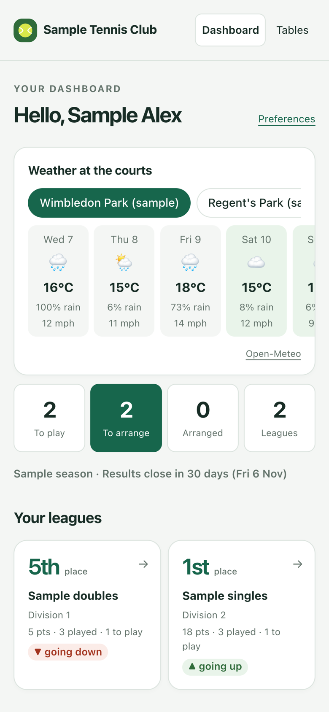
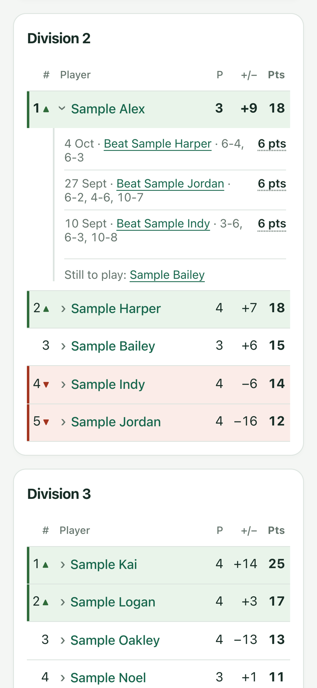
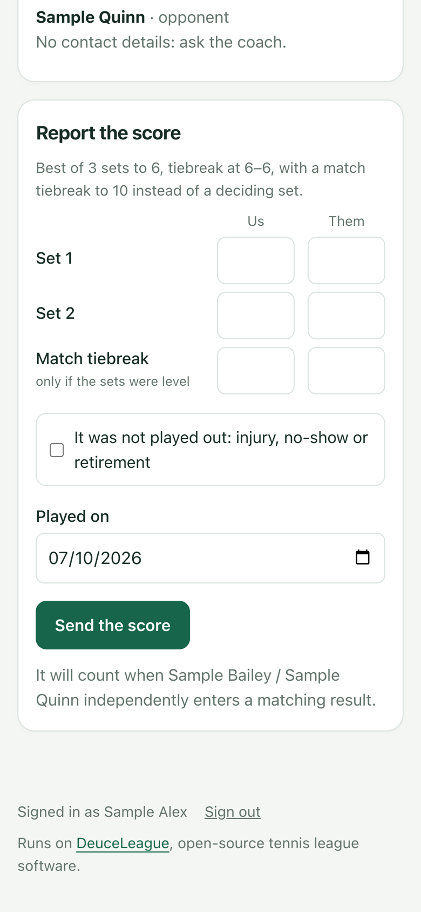
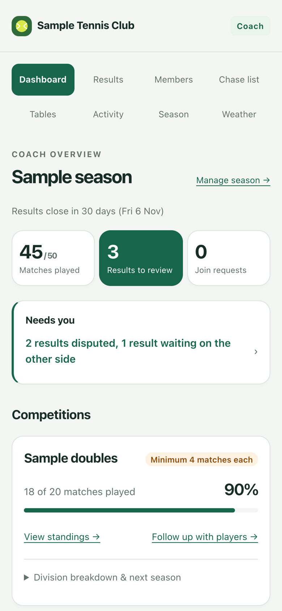
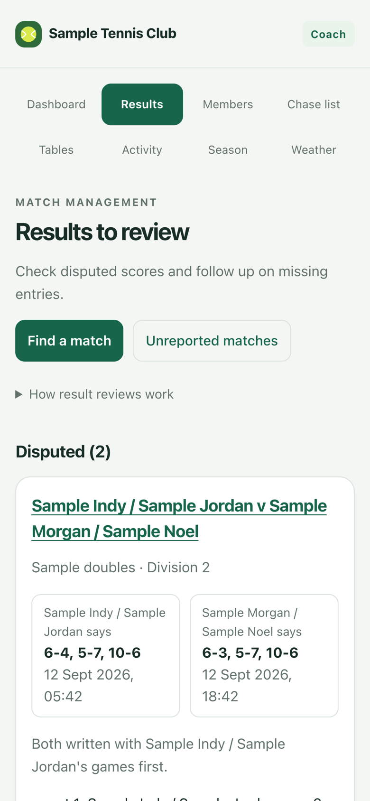
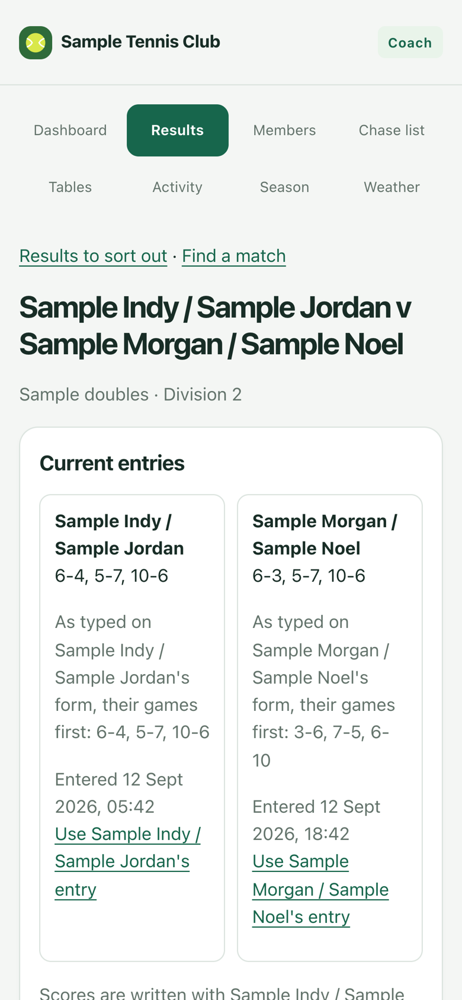

A straightforward league for players and coaches.
A club player built this to see what today’s technology could do for a club league: a simpler way to report scores, check the tables and run the league. Players open a website on their phones, so there’s one less app to worry about. A coding agent, such as Claude Code, Codex or Pi Agent, can help with the bigger league jobs and extend the website to suit your coaching and the club.
Open for a club beta, with known limits. A coach willing to test new software can try the sample club and then pilot it with players, checking results, tables and matches that still need a decision. Whole-club simulations have found useful gaps; real-club use is still unverified. See the findings and next work.
Why it exists
DeuceLeague started with a club player who wanted to see what today’s technology could do for a convenient club league. Most visits are for a few everyday tasks: enter a result, correct a pending entry, check the table or see who’s left to play. DeuceLeague puts those within easy reach.
Until recently, software like this needed a developer to build and look after it, so it came as a commercial product, paid for with subscriptions, adverts or attention. AI coding agents have cut the cost of building, running, understanding and exploring software. A coach with limited technical skills can now run the league, change the website and ask questions of their own data by describing what they want. So DeuceLeague doesn’t need traffic or adverts to exist. It’s measured by what it does for the club: better tennis, more competitive matches, and more people playing regularly for their health.
It works in a browser on a phone, tablet or computer, with no separate app to install or keep updated. The club runs its own copy and keeps its own data. Because the code is open source, a coach can adapt the website with a coding agent — adding coaching information, useful links or a small page for a regular league task.
What players see
A player opens the site a few times a month to do one of four things: enter a result, correct a pending entry, see where they stand, or see who they still have to play. Each of these is a tap or two from the home page.



These are screenshots of the real pages on an iPhone, filled with made-up results.
A result counts when both sides enter matching results
Both sides enter the full result independently. Matching entries confirm it; pending entries contribute no points. Players see their own entry and whether the entries match, while opposing submissions stay private. If entries differ, players speak outside the app and correct their own pending entry. If they need help, open the match on the coach’s Results page to decide it. Review the named sides, points, played credit and minimum-match consequences before saving. Corrections to confirmed results require an explicit override; earlier submissions, your reason and your coach identity stay in the history.
What you see as the coach
You run the league from your phone at /coach, signed in with your administrator key. It shows what needs you first: results to decide, join requests to approve, players to chase. Tables, members, the season and court forecasts are a tap away.



Also screenshots of the real pages, with made-up results.
What you do: ask a coding agent
For the first season, you tell your coding agent what you want in plain English. It reads the league’s published instructions for its API, shows you the important names, dates and division changes, and makes the changes. After you have used it for real, we decide whether any repeated job deserves its own small coach screen. A few examples:
| You say | What happens |
|---|---|
| Set up the Autumn season from the Summer tables. Top three up, bottom three down, and put Priya in Division 3. | The Autumn competitions are drafted with every player placed, each with a reason why. You check them over, and nothing takes effect until you switch them on. |
| Who still has matches to play with two weeks left? Draft them a friendly nudge. | You get a list of players with matches outstanding and how many each. You decide what gets sent and to whom. The league never messages anyone on its own. |
| Sam and Alex can’t agree. It was 6-4 3-6 10-7 to Sam. | You settle it. Both players’ versions stay on record, and the tables update at once. |
| Add the new members from this spreadsheet. | The members are created. You then send each one a sign-in link from your coach page. |
| Give an extra point for winning by seven games or more. | The scoring rules are settings, so no programmer is needed. The tables recalculate straight away. |
| Sam’s lost his phone. | Sam is signed out on every device. |
You stay in charge. The software suggests promotions and relegations, but it never makes them. It closes reporting at the season’s deadline, but it never decides a score. You know things the data doesn’t, such as who was injured, who’s moving away, or who ought to be in a higher division.
Try it, then set it up
See it working first. Deploy a sample club in mid-season to a free Cloudflare account, then play it as the coach and as two players: enter matching results independently and watch the table change. It takes about fifteen minutes in a browser, with no email service and nothing to install.
When you’re happy, the real club is a fresh deployment without the sample. The accounts are yours, and we’ll do the first setup together.
- Create the Cloudflare account youThe club owns the account, Worker and database.
- Deploy the league youThe same Deploy to Cloudflare button as the trial, with a new Worker and a new database.
- Create the club youThe installer shows the administrator key once. You keep that key in a password manager. Your coding agent gets separately scoped keys for its jobs.
- Add members and the first season coding agentMembers come from a spreadsheet of names, and divisions from our last tables.
- Invite the players youSign in to your coach page and send each player their sign-in link, for example on WhatsApp. You can see who has signed in, and nudge those who haven’t.
- Later, if you want youThe club’s own address, such as
league.yourclub.org, with one DNS record; and sign-in emails, so players can ask for their own link.
The full guide to starting your club
What it costs
workers.dev, or with the club’s domain
Sign-in emailsoptional; depends on the provider
Totaloften nothing
Looking after it
Cloudflare runs the Worker and D1 service. Keep the administrator key safe, review the D1 recovery options for the account, and check the deployed website after each update. Your coding agent can help with those checks.
Run your club
Each guide is written for you and your coding agent. Open it with the agent and go through it together; the agent handles the commands and shows you anything that needs your decision.
A fresh deployment for real: your members, your courts, and inviting the players.
Running the league day to dayDescribe what you want to your coding agent; it shows you the changes and makes them.
Make the site your ownChange how it looks and works on your own computer first, then put it live.
Update your clubTake a new DeuceLeague version. You choose what to take, and nothing goes live until you merge.
New players joiningA join form you can share anywhere; you approve each request and give a level.
Sign-in emailsOptional. Without them, you hand out sign-in links yourself, for example on WhatsApp.
Court forecastsA 14-day outlook for each of the club’s courts on the players’ home page.
Recovering administrator accessWhat to do if the administrator key is lost.
How it fits together
The league has a small core that holds the club’s data and rules. Everything players and you actually look at sits around it. Those outer pieces can be changed, replaced or added to with a coding agent, without touching the league data.
- WhatsApp nudges you send
- A Telegram group bot
- Tables on the club website
- A lesson booking page
- DeuceMate match reviews
- The players’ website
- Your coach’s site at
/coach
Ideas someone could build with a coding agent
A button on your coach page that opens WhatsApp with a drafted reminder to a player with matches outstanding. You read it and press send. Sending messages automatically would need Meta’s WhatsApp Business service, which isn’t included.
Posts each agreed result and weekly table changes to the club group. It could also take scores (“6-3 6-4 v Alex”), once it has checked it’s really the player writing.
Drafts a message to everyone with matches outstanding, a month out and again a fortnight out. You approve each one before it goes.
A small box on the club’s existing website showing the current divisions.
Each club can have its own Worker and D1 database, so a county association could run leagues for all its clubs with separate data.
Earning from it, without getting in players’ way
DeuceLeague is free, and it stays free for players. A coach who runs the league may still want it to help their coaching. Running it, you get to know a whole club of players, and that network is worth something. Use it to offer services that help players, never to sell their attention.
Keep the league pages plain. Players open the site to do one quick thing: enter a result, check the table or see who’s left to play. Keep those pages free of adverts and clutter. Anything commercial goes in your own space on the home page, or on a page of its own.
A card on the home page with your group sessions, and a link to the booking system you already use.
A player scores a league match with DeuceMate, a free scoring app for Apple Watch and iPhone with no adverts or tracking. It keeps point-by-point stats and can share the match as a single web page. The player sends it to you and books a session to go through it. They work on their game, and you’re paid for coaching.
Players send short clips of a stroke or a point, and you reply with feedback, for a fee or as part of a lesson.
A restringing service, ordered from your space on the home page and handed over at the club.
Club trips, or a holiday partner, offered to players who say they’re interested. A player’s details go to a partner only with that player’s own consent, and the member list is never sold.
A page of rackets, shoes and bags that members are passing on, with a small commission for you if you want one.
One clearly labelled card that you control, for a business your players would actually use. Keep it away from entering results, and use no advertising network: its scripts would track players and slow the pages down.
Coaching with the club pro
None of these are included. They’re ideas to build with a coding agent, and you choose which suit your club. DeuceMate is a separate open-source project.
Paid for value, not for clicks
Much of the web has been paid for with attention: more visits, more adverts. Cloudflare’s chief executive, Matthew Prince, has argued that this model is breaking as AI answers questions without sending visitors, and that creators should be paid for the value of their work instead. He has likened it to how Spotify made paying for music more convenient than piracy. Cloudflare’s pay per crawl is one early form of this: a site can charge AI crawlers for each page they read.
What a coach can do with it. Your coaching knowledge is the content worth paying for: drills, technique notes and match-play advice, written up in your own words. Publish it as public pages on the club’s own domain through Cloudflare, then choose for each AI crawler whether to allow it, charge it or block it. Your players read it free; AI companies pay to learn from it.
What stays out of it. The league itself is never for sale. Players’ pages sit behind sign-in and hold personal details, and the core earns nothing from visits. Pay per crawl is still new and its availability is limited, so treat it as a promising extra alongside the services above, not as the plan.
Built to be trusted
- Players’ personal details are protected. Players only see each other’s display names. Emails, phone numbers and dates of birth need a special permission that the coach controls.
- If someone asks to be erased, their personal details are removed and their results stay, as data protection law (GDPR) requires.
- Every change is logged, including who made it and when, and nothing in the log can be quietly edited afterwards.
- Automated tests cover the rules above, including D1 and Worker workflows. Maintainers run them on their own computers before merging a change and record the results with it; nothing runs them automatically on GitHub yet.
Where it stands: beta
Open for a club beta, with known limits. Automated tests pass. In a local Worker simulation of a 150-member club over two seasons, all 191 independently checked standings rows matched. It hasn’t yet run a season at a real club, and deployed Cloudflare limits haven’t been verified. A coach willing to test new software can try the sample club, then pilot it with players while checking results, tables and unresolved matches.
Six simulated clubs
Before any real club, we ran whole clubs through their seasons on a computer: scripted matches, with AI agents playing the coach and the players and reporting what got in their way. Each run fed the next round of work.
- 30 September: two seasons of a club, with scripted players, four player agents and a coach agent, to find pain points.
- 1 October: two seasons with GPT agents after the first fixes. It led to four work items: independent score entry, coach result overrides, newcomer status and email invitations.
- 2 October: email invitations and joining, as a scripted run against the compiled Worker and all the real database migrations.
- 3 October: two seasons with Claude agents on the real local Worker, testing those four work items.
- 4 October: the first run at a real club’s size, 150 members over two seasons. All 191 checked standings rows matched. It pointed to scale on the coach’s Members and Results pages, mid-season withdrawal and contact details.
- 7 October: a blank-start model took 150 applications through the current join validator and two seasons with 88 league players using the current league engine. The Worker and browser couldn’t run in that test environment, so sign-ins, coach actions and player activity were modeled rather than observed. It highlighted the effort of approving a large joining cohort, chasing one-sided results and reviewing vacancies at season turnover. Its match and follow-up rates are assumptions, not observations of real players.
Next work
The 7 October work candidates come from an in-process model, so each needs a live browser and D1 check before it’s treated as a confirmed problem:
- Run a blank-start club through the actual join form, coach approvals, separate player browsers and season turnover; verify quotas, persistence and what people see on their phones.
- Check the new self-rating and coach review flow with real applicants. The timed launch quota can take 200 requests per day for a week, then returns to the normal 100; approvals are still one applicant at a time.
- Help the coach contact players with one-sided results, and review disputes, unarranged matches and division vacancies before closing a season.
- Check whether players understand that an arranged marker updates every participant’s board but doesn’t send a message or book a court.
Players interested in one of these are welcome to fork the project and work on it. The development guide explains how to run the checks, and the issue drafts are starting points. All simulations · latest report · 150-member live local Worker run.
Working today
- Signing in, entering results and correcting pending entries
- Tables, progress and past seasons
- Promotions and relegations into the next season, confirmed by you
- The list of who still has matches to play
- Weather at the courts
- Your coach page: sign-in links for players, and who has signed in
- A join form for new players, approved by you, with a level for each
- A sample club to try it all in about fifteen minutes
- Guides to trying it, starting a club and recovering access
- A short guide to everyday coach tasks with a coding agent
- All of the code, open source on GitHub
Before our first season on it
- Set up the club’s Cloudflare account together
- Bring in members and our last tables
- Try the coach workflow and see whether any repeated task needs a small admin screen
Build on it
The league is an API. The players’ website and the coach’s site are built on it, like anything a club builds with a coding agent: a bot, an app, a report. Every deployment publishes its contract at /openapi.json, and there’s a readable API reference.
A season contains competitions; each competition has divisions and entries. Entries play matches. Standings are computed from confirmed results whenever they’re read. The coach reviews and applies promotion and relegation placements for the next competition. League rules are data: scoring, tiebreaks, promotion counts, withdrawals and deadlines belong to each competition.
- API concepts, permissions and workflows
- How the deployment works
- Developing DeuceLeague: checks, running it locally, and API changes
From VPS to Cloudflare
DeuceLeague began as a Docker and PostgreSQL application on a small VPS, which left each club with a server to operate, secure, back up and update. It now runs as one Cloudflare Worker and one D1 database per club. The original source is kept at the vps-baseline-2026-09-28 tag for reference, recovery, or a separate legacy fork.